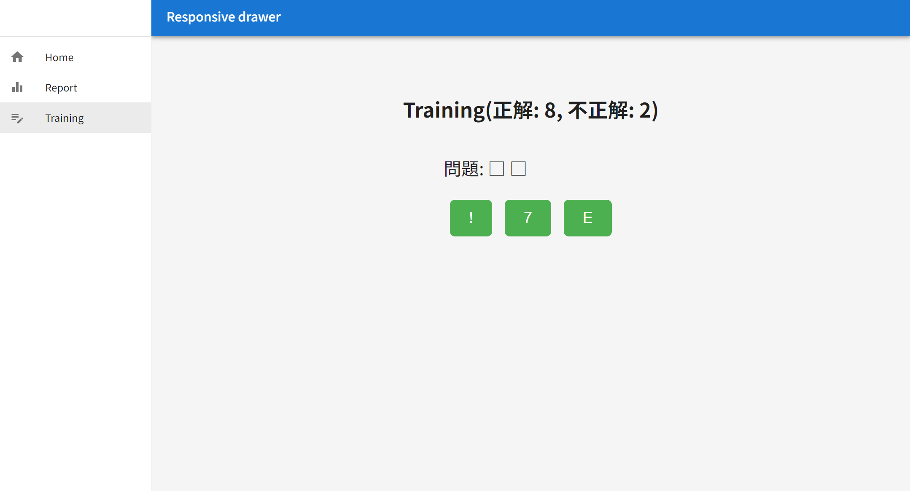
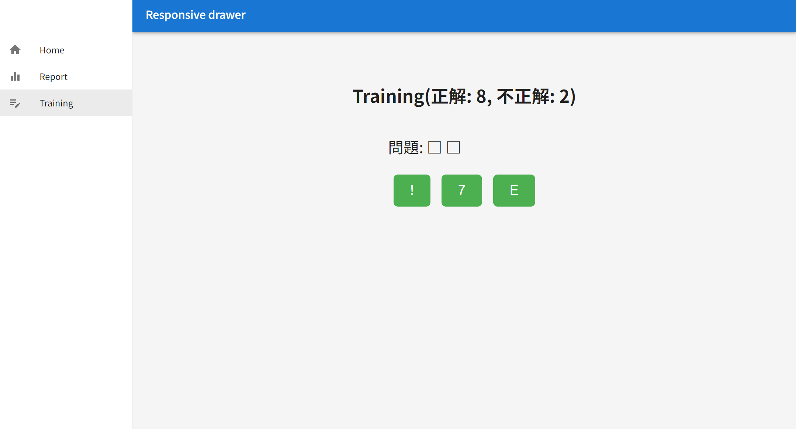

Q-dog適性検査練習アプリ
GoとReactを使って開発したアプリです。以下はアプリ画面のスクリーンショットです。
GoとReactを使って開発したアプリです。以下はアプリ画面のスクリーンショットです。
大学２年生のころから講義の合間に作成しているアプリケーションです。
バックエンド部分はほぼ完成しており、フロントエンド部分に取り掛かっています。
以下はプロダクトの構成です。
HTMLとCSSで作った簡易的な自分のブログです
これからもいろいろなプロジェクトを追加する予定です。お楽しみに！